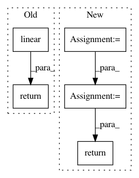

26f9ac98e5356bd6fa40dd723bb25ecb24cd1091,torch/nn/functional.py,,linear,#Any#Any#Any#,1737
Before Change
if has_torch_function_variadic(input, weight):
return handle_torch_function(linear, (input, weight), input, weight, bias=bias)
return torch._C._nn.linear(input, weight, bias)
def bilinear(input1: Tensor, input2: Tensor, weight: Tensor, bias: Optional[Tensor] = None) -> Tensor:
r
After Change
else:
output = input.matmul(weight.t())
if bias is not None:
output += bias
ret = output
return ret
def bilinear(input1: Tensor, input2: Tensor, weight: Tensor, bias: Optional[Tensor] = None) -> Tensor:
r
In pattern: SUPERPATTERN
Frequency: 3
Non-data size: 5
Instances
Project Name: pytorch/pytorch
Commit Name: 26f9ac98e5356bd6fa40dd723bb25ecb24cd1091
Time: 2021-02-02
Author: ngimel@fb.com
File Name: torch/nn/functional.py
Class Name:
Method Name: linear
Project Name: tristandeleu/pytorch-maml-rl
Commit Name: 551436a8106f3292db2f7d1a6da3462f2aa8bb6b
Time: 2018-06-14
Author: tristan.deleu@gmail.com
File Name: maml_rl/policies/normal_mlp.py
Class Name: NormalMLPPolicy
Method Name: forward
Project Name: dmlc/gluon-cv
Commit Name: cf767a1297d67caf41577508aacc7cbc24ae8f14
Time: 2020-09-16
Author: 43100519+xdeng7@users.noreply.github.com
File Name: scripts/gan/stylegan/modules.py
Class Name: EqualLinear
Method Name: hybrid_forward